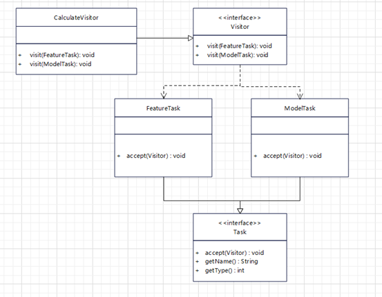

设计模式实战之访问者模式
概念介绍
访问者模式主要解决了数据结构和数据行为的分离，通过访问者模式可以在保持数据结构相对稳定的情况下，对数据行为进行单独扩展。所以访问者模式可以理解为重构模式。
访问者模式主要有四个角色：
- Visitor接口，通过抽象的访问者接口定义了访问的行为
- ConcreteVisitor实现类对访问行为进行具体的逻辑实现
- Element接口定义了被访问者的基本操作
- Element实现类定义了具体的被访问对象实现
访问者模式适用于数据结构相对固定而行为可变的场景，结合类图也就是说Element以及其实现类相对固定，而需要改变的是访问这些Element之后的行为。访问者模式的可扩展性体现在visitor的可扩展。
访问者模式最重要的优点我认为是实现了单一职责原则，每一个visitor实现类实现了一个功能，职责划分非常清晰。
访问者模式的缺点：
- Element被访问类不可扩展
- Visitor直接依赖具体的被访问对象，不符合依赖倒置原则
- Visitor直接访问被依赖对象内部的方法，不符合迪米特法则
问题分析
在模型计算的触发中我们定义了三种计算任务，分别是特征计算任务、累积损伤计算任务和异常诊断计算任务。任务类型是相对固定的，而计算任务所对应的行为是有扩展需求的，这恰恰符合了访问者模式定义的使用场景。
通过访问者模式可以在保持数据结构相对稳定的情况下，对数据行为进行单独扩展
详细设计
在进行详细的类图设计之前，我们进行角色匹配
- Element角色定义了被访问者的通用属性，对应计算认为的抽象类Task
- Element1等具体被访问者就对应了我们场景中的计算任务：FeatureTask、ModelTask等
- Visitor角色定义了访问者的行为
- ConcreteVisitor角色定义了具体的访问行为，如计算行为可以对应一个具体的CalculateVisitor
结合访问者模式得到类图如下：
CalculateVisitor实现如下：
1 | public class CalculateVisitor implements Visitor{ |
对于CalculateVisitor来说引起变化的原因只有计算逻辑的变化，因此是符合单一职责原则的。计算任务类型固定，不存在任务的扩展需求，所以从扩展角度来看访问者模式是可以满足要求的。
我们再看一下上面访问者的类图，发现迪米特法则也好依赖倒置原则也罢，问题的根源在于Visitor直接依赖了实现类，那直接依赖接口会怎么样呢？

依赖倒置的问题解决，Task接口和Visitor接口可以分别扩展，开闭的问题也解决了。CalculateVisitor中的实现：
1 | public class CalculateVisitor implements Visitor{ |
客户端调用如下：
1 | List<Task> taskList = new ArrayList<>(); |
总结回顾
在上面的例子中我们首先引入经典的访问者模式，将数据结构和行为分离后发现违背依赖倒置原则引发的扩展性问题其实可以通过泛型来解决。经过改造之后，设计更加灵活，可扩展性更好。
但是我们要谨记每一个设计模式都有其适用的场景，设计模式没有银弹。
对比以上两种访问者模式实现可以发现，第二种设计扩展性更好的同时带来了架构的复杂性，对于被访问者的要求更高了，也就是说他们必须是同类，只有这样才能将公共行为抽取到接口来满足依赖倒置原则；反观第一种设计，由于访问者直接访问实现类，所以被访问者实现类之间只存在accept这一个共性约束，被访问者之间是同事类的关系即可。